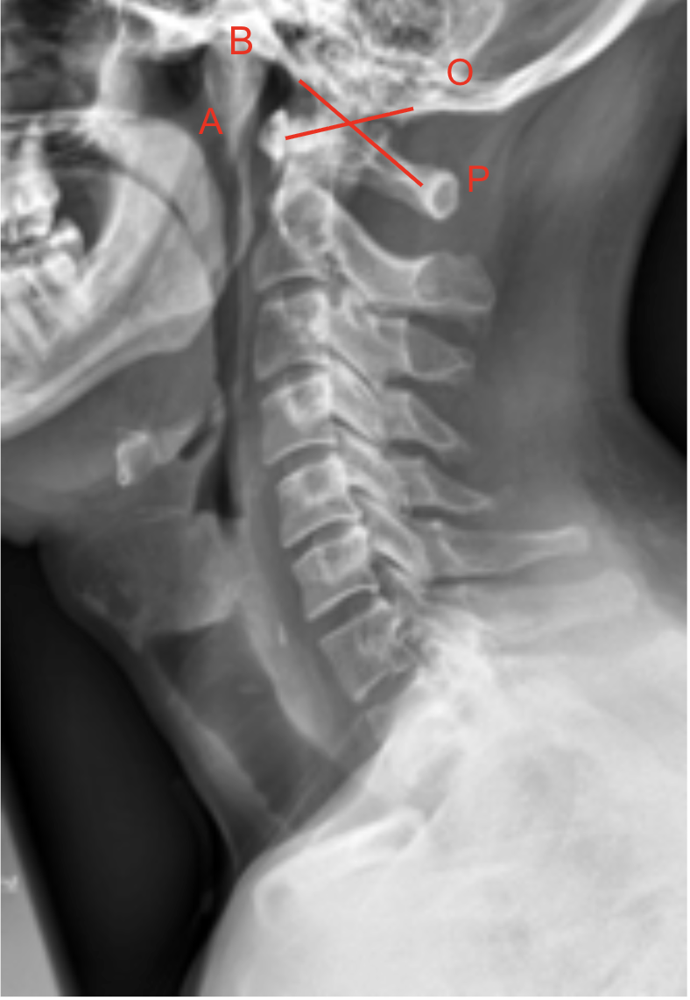
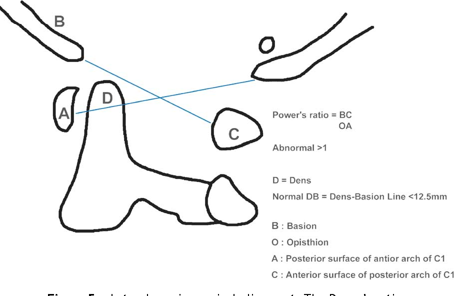

Richards PJ. Cervical spine clearance: a review. Injury. 2005 Feb 1;36(2):248-69.
1) Description of Measurement
Power’s Ratio is a radiographic measurement used to assess atlanto-occipital dissociation (AOD), an unstable and potentially fatal injury involving separation between the skull and the cervical spine.
It evaluates the relationship between the skull base and the atlas (C1) by comparing the anterior and posterior distances between the foramen magnum (basion and opisthion) and the atlas (anterior arch and spinolaminar line).
A normal ratio suggests intact ligamentous connections between the occiput and atlas; an increased ratio indicates anterior displacement of the skull relative to the cervical spine, characteristic of AOD.
2) Instructions to Measure
3) Normal vs. Pathologic Ranges
4) Important References
Powers B, Miller MD, Kramer RS, Martinez S, Gehweiler JA Jr. Traumatic anterior atlanto-occipital dislocation. Neurosurgery. 1979 Jan;4(1):12-7. doi: 10.1227/00006123-197901000-00004.
Kleweno CP, Zampini JM, White AP, et al. Survival after concurrent traumatic dislocation of the atlanto-occipital and atlanto-axial joints: a case report and review of the literature. Spine (Phila Pa 1976). 2008 Aug 15;33(18):E659-62. doi: 10.1097/BRS.0b013e318182272a.
Harris JH Jr, Carson GC, Wagner LK. Radiologic diagnosis of traumatic occipitovertebral dissociation: 1. Normal occipitovertebral relationships on lateral radiographs of supine subjects. AJR Am J Roentgenol. 1994 Apr;162(4):881-6. doi: 10.2214/ajr.162.4.8141012.
5) Other info....
Power’s Ratio is simple and reproducible, making it valuable in the initial trauma evaluation of patients with suspected upper cervical injury.
Because it depends on accurate landmark visualization, CT or MRI confirmation is recommended for definitive diagnosis.
Additional measurements such as the Basion-Dens Interval (BDI) and Basion-Axial Interval (BAI) should be obtained concurrently for comprehensive assessment.
In pediatric patients, normal ligamentous laxity can lead to ratios slightly above 1.0 — interpret cautiously.
Always assess in the context of clinical stability and neurological findings.
In some posteriorly displaced injuries, the ratio may be < 0.7, indicating posterior translation of the skull relative to the atlas.